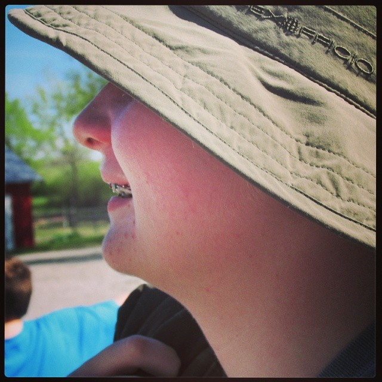
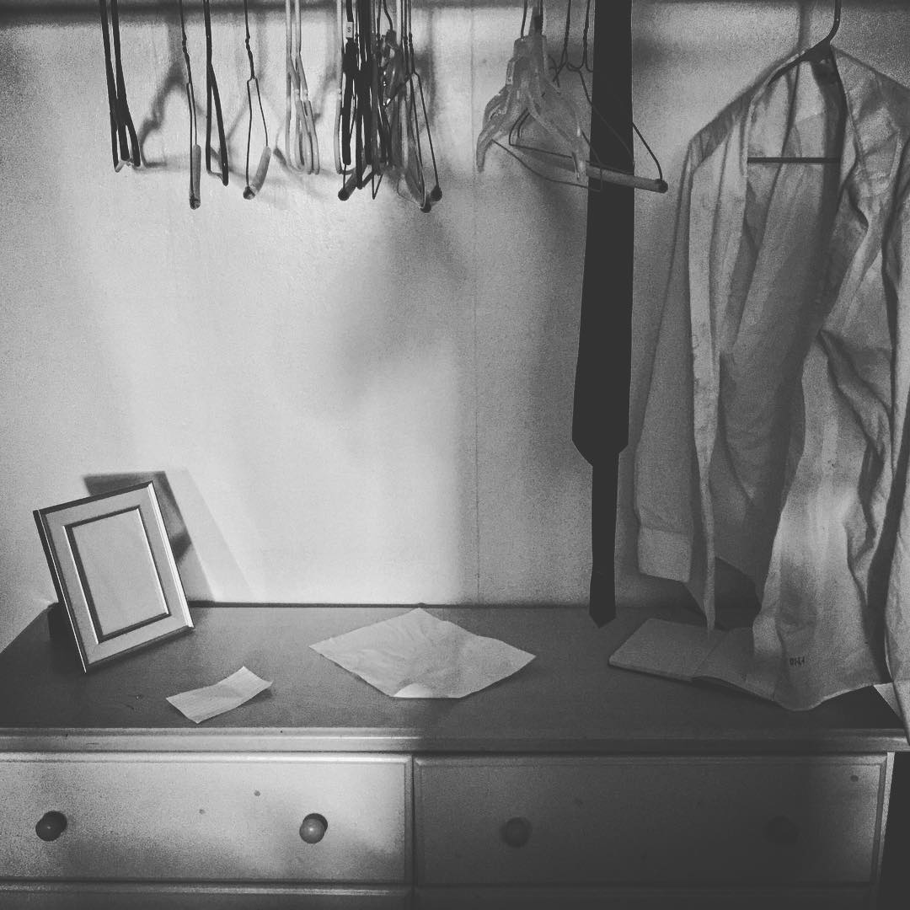

Created during the spring semester, this research project delves into the complexity of a hypothetical carnival situation. (Research Project)
This essay examines the diction used by two very different speakers with a similar message. (Rhetorical Analysis)
This narrative was created in response to a winter break bingo. It is mostly focused on sleep, similar to most of my life. (Narrative Writing)
This is a brief explanation of the use and function of "revolutionaryPy", a program created for Computer Science Principles. (Thinking 1)
This is an example SATB harmony I created during my time in AP Music Theory. (Thinking 2)
This is my report of Abraham Clark, one of the signers of the Declaration of Independence. Contains Shakespearean Sonnet and Limerick. Transcript. (Poetry/Photograph 1)
An improvisational melodic beat poem on the woes of a friend of a guy who won't taste his fingers after he plays the guitar. (Poetry/Photograph 2)

An melifluous improvisational ode to one's superior sockhood. (Poetry/Photograph 3)
